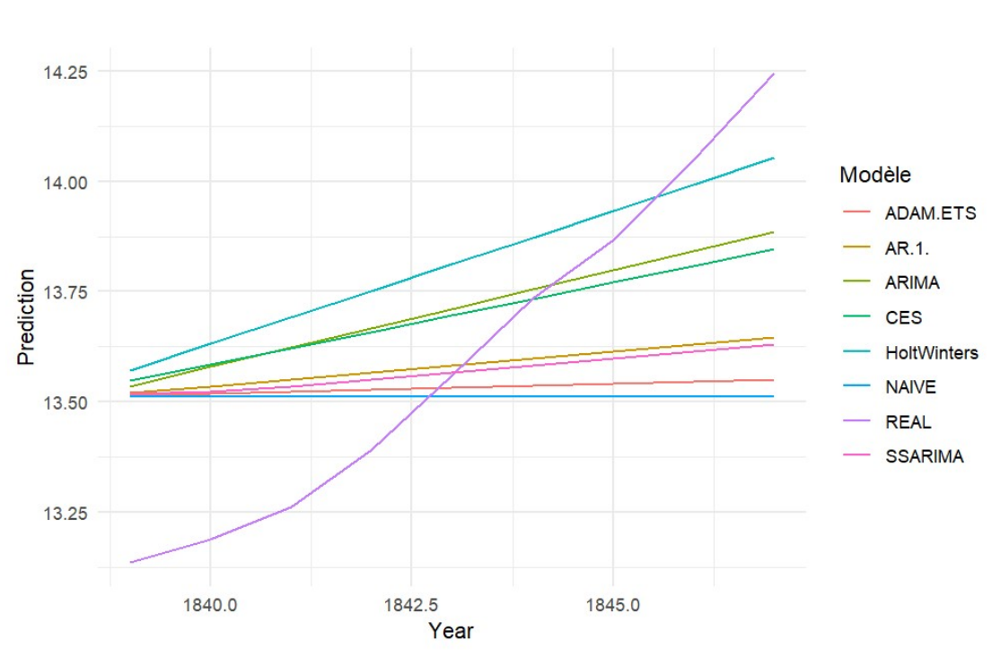

This is a piece of work I did for my “Prévision et Conjoncture” course, where I learned several models and techniques to make future predictions about any variable. These models include Holt-Winters, CES (S)ARIMA and ADAM-ETS models. Population evolution seemed riveting to me and chose Spain as the territory to investigate. I assessed the accuracy of the different models and ultimately used the one that provided the lowest error rate when forecasting. Even though I focused on and made predictions on historical data (1277-1838), the same methodology can be extrapolated to current values. R was the software I used to manage the data.
Introduction
Since the beginning of humanity, world’s population has been continously developing and growing. From a wide range of biological to economic causes that shape it, the population follows a trajectory of great relevance to analyze since this trajectory has numerous implications in the economic and social structure, in addition to other areas as important such as the environment and biodiversity. On the one hand, economic growth has historically driven population growth while a greater number of people stimulates demand for goods and services, employment, and economic activity in general. On the other hand, the limitation of available resources and environmental degradation seems to be greater as the population continues to grow. This work focuses on making prediction tests about the population of Spain based on historical data going from 1277 to 1838, in order find a suitable model that could be used in a real context.
1. Data
Data source comes from databases provided by “La Fundación Real del Pino”, a private non-profit organization located in Madrid, Spain. Founded in 2006, its main goal is to promote research in diverse social sciences fields, particularly in economics and economic history. The series is composed of 561 years, plus 12 years that will be reserved to compare model-predictions with actual values. It is important to note that data before 1750 has been constructed from mathematical equations and models, which may not capture the complexity of the phenomenon they seek to represent. Therefore, careful attention is required when interpreting the results of this analysis. The original series is available in Figure 1.
Figure 1: Total Population in Spain, 1277-1838

An adjusted series to correct for one Level-Shift (LS) outlier has been constructed. Outliers are atypical, extreme values that can affect the quality of model fit and the reliability of predictions. In this case, the outlier detected in the year 1508 reflects a change of the population’s trajectory from a significant slowdown driven by the expulsion of the Jews from the country to a rapid and natural recovery.
Similarly, a differentiation has been applied to the original series in order to meet the stationarity hypotheses (constant mean and variance over time), essential to be able to model the data. The final series corrected from outliers and differenciated is available in Figure 2.
Figure 2: Adjusted series, 1277-1838

2. Linear predictions
2.1. Model’s parameters
In order to analyze temporal series and make future predictions, it is essential to previously estimate models that capture the dependence parameters of past values and other predictor variables. The main assumption of linear models is that the relationship between variables is linear. The models’ parameters that have been monopolized are summarized in Table 1 and explained next:
| AR(1) | ARIMA(0,2,2) | Holt-Winters | ADAM-ETS | SSARIMA | CES | |
|---|---|---|---|---|---|---|
| AR1 | 0.4820 | |||||
| MA1 | -0.5602 | 0.5009 | ||||
| MA2 | -0.4167 | 0.2134 | ||||
| MA3 | 0.0755 | |||||
| Alpha | 1 | 1 | ||||
| Beta | 0.4401 | 0.9999 | ||||
| Phi | 1 | |||||
| Distribution | Normal | Normal | Normal Generalised | Normal | Partial | |
| AIC | - 1367.96 | -1344.38 | -3395.009 | -1367.81 | -1231.55 | |
| AICc | -1344.33 | -3394.748 | -1367.70 | -1231.50 |
AR(1): describes how the current value of a variable is influenced by its immediately preceding value and a stochastic error term. The parameter of this model is 0.4820. A value lower than 1 indicates a stationary series that tends to revert its mean, that is, that tends to converge towards a mean value in the long term. The positiveness of the coefficient reveals an increase of each current value as long as time goes up. Indeed, a positive term AR(1) implies that when the value of the time series t-1 is greater than its mean, the value at time t is also greater than its mean, suggesting a pattern of growth over time.
ARIMA: It combines three components: autoregression (AR), differencing (I for Integrated), and moving averages (MA). The AR part of the model uses the relationship between an observation and a number of lagged observations (previous time points). p is the number of lagged observations included in the model. The I component involves differencing the data to make it stationary. The parameter d indicates the number of times the series is differenciated. The MA part of the model uses the relationship between an observation and a residual error from a moving average model applied to lagged observations. The parameter q is the number of lagged forecast errors in the prediction equation. Our model is characterized by having two parameters Moving Average processus significant at the 1% level. This shows a dependency relationship between the value at a specific point of time t and error term both at the immediate previous period, t-1, and at the second previous period t-2. Negative coefficients indicates this relationship is negative and the greater coefficient of MA(1) compared to MA(2) suggests that the error term at t-1 has a higher effect on the current value.
Holt-Winters: Appeared in the 1960s, Holt-Winters method is a prognostic technique that can capture both tendence and seasonality in data, with the advantage of being able to adapt to no-seasonal series. Updates to the level, trend, and seasonality components are based on three smoothing parameters: α, β, and γ, where α (alpha) controls the smoothing of the level component, β (beta) controls the trend component, and γ (gamma) the seasonality component. As the series analyzed on this work does not have a seasonal component, Holt-Winters model has been estimated in R specifying an unexistent gamma parameter. In the instances when α and β parameters are close to 1, we talk about a “smooth” forecast, while if they are close to 0, they reflect a “strong smoothing”. In the first case, recent past has a big weight on forecasting. In the second case, a higher importance is given to distant past. In this case, we could say near past has a bigger weight than remote past, because α is completely equal to 1 and β coefficient is relatively important.
ADAM-ETS: The ADAM-ETS method is an approach that combines exponential smoothing (ETS) approaches with state space models to model time series with error, trend, and seasonality components, also allowing the inclusion of other covariates. The smoothing coefficient alpha controls the relative importance of past observations in estimating the current level in the ETS model. In this case, the estimated value of alpha is 1.0, specifying that full weight is given to the most recent observation in the calculation of the current level. Beta captures the relevance of diƯerences between past observations in estimating the current trend in the ETS model, which has a value of 0.9999. This indicates that diƯerences between past observations have a very important weight in approximating the current trend. Phi represents the smoothing coefficient associated with the trend. A value equal to 1 suggests a complete weight to recent observations when estimating the trend, which means that the trend will adjust more quickly to recent changes in the data.
SSARIMA: They are a prediction technique that combines the State Space with ARIMA methodology for the analysis and forecasting of temporal data, whose acronym meaning is: “State Space ARIMA”. In this way, these models can include ARIMA components to model the time structure of the series, as well as additional state space components to shape other unobservable factors that can influence the time series. Auto.sarima function in R preconised an ARIMA(0,0,3) model with a constant. We can see in Table 1 that the weight of each previous period MA decreases with the higher number of parameters. That is, the influence of the most distant periods is smaller compared to the closest ones. Indeed, coefficient of MA(1) is 0,5 while that of MA(3) equals 0,075.
CES: Proposed by Svetunkov, Kourentzes and Ord in 2022, CES models refer to “Complex Exponential Smoothing” models. They are an extension of traditional exponential lysing methods that are based on the theory of complex variables and oƯer an innovative way to model and forecast time series. They can predict both stationary and non-stationary series, and can be adapted to seasonal data through their formulation in a state space form. Auto.ces function of R software estimated a CES(n) model, where n represents the non-seasonality term.
Additionally, AIC (Akaike Information Criterion) and AICc (Corrected Information Criterion) have been included in order to compare models and be able to determine which one should be prioritized if we factor in this criterion. The AIC seeks to minimize the discrepancy between the model and the data, penalizing the complexity of the model. This means that a good model will be one that has a good fit but with a minimum number of parameters. The AICc is a correction to the AIC, especially useful when the sample size is small compared to the number of parameters.
ADAM-ETS offers the lowest AIC and AICc. This is the reason why this model is preferred to others if we consider this criterion. However, the differences of AIC and AICc between the different methods are small, meaning they have a similar quality in terms of their ability to fit the data and their complexity.
2.2. Model’s predictions
Once the model’s parameters are defined, we can proceed to make predictions. For this, nine years of the original series had been kept with the aim to compare them with the forecast generated by the models. Figure 3 shows the forecast evolution of these nine years for each of the model along with actual data, going from 1839 to 1848. A naive prediction has also been included, which is a simple forecasting approach based on the assumption that the future value of a time series will be equal to the last observed value in the series. In other words, this method assumes there is no change in the time series and that the future value will be equal to the last observed one. Thus, this approach is useful as a reference to determine whether more complex models provide any significant prediction improvement.
Figure 3: Model’s predictions

The models that seem to better fit the real series are Holt-Winters, ARIMA and CES models, because they are the ones that have predicted a higher increase from 1838 to 1847. We observe the preference of ARIMA, which only contained MA components, compared to models with only an AR component. This suggests that the time series is more influenced by past errors than by past values. That is, the data may exhibit erratic or random behaviour, where future values depend primarily on past errors and not on a clear trend or pattern. Likewise, we can observe that Holt-Winters and CES methods have managed to fit the data relatively well. Indeed, they are designed to capture the trend and seasonality of the series (that in this case, there is no seasonality). The series grows rapidly over time, with a clear increasing trend, and these models, in particular Holt-Winters, are the ones, with ARIMA, that have the most predicted a pronounced increase with a higher growth rate. It appears that ADAM-ETS, on the contrary, even if it had the lowest AIC and AICc, presents higher error rates.
3. Prediction evaluation
To evaluate the model’s performance, we are going to use four evaluation metrics:
Mean Squated Errors (MSE) : a statistical measure that provides a measure of how well the model achieves this goal. Indeed, this metric offers a quantitative assessment of the accuracy of a prediction model relative to the actual values. It is based on the difference between model predictions and true observations, squared to penalize larger errors, and then the average of these squared differences is calculated.
Diebold-Mariano (DM) test: a statistical test used to compare the predictive accuracy of two time series models. This test was proposed by Francis X. Diebold and Robert S. Mariano in 1995, whose purpose is to determine whether there is a significant difference in the predictive performance between two models. The null hypothesis is that both models have the same predictive accuracy, while the alternative hypothesis is that at least one of the models offers a more accurate forecast. It will be used to compare each of the models with the naive forecast, which helps determine if the model in question is more interesting than making a simple prediction.
𝑅 OOS: a measure of the predictive ability of a model when applied to new data that were not used to train the model. In essence, it measures how much variability in the dependent variable the model can explain in data not used in the fitting process. A higher out-of-sample R-squared value indicates a better predictive ability of the model on new data. It is also a valuable tool for comparing and evaluating the predictive performance of different models relative to a reference or benchmark model. If the value of this metric is greater than 0, it will be interpreted that the model in question has a superior predictive ability to the benchmark model. If it is less than zero, it will be the opposite, while if it is equal to 0, there will be no predictive difference. The naive forecast will be used as benchmark.
Cumulative Squared Prediction Error (CSPE): often used to evaluate the accuracy of predictions in time series models. It is calculated by adding the squared errors of the predictions over a given period. Squared errors are used to give more weight to large errors, reflecting the importance of avoiding large deviations in predictions.
Table 2 summarizes the values of the three first mentioned metrics, while Figure 4 shows the CSPE.
Table 2: Model’s performance indicators Model MSE R OOS DM statistic DM p. value AR(1) 0.1109 0.2472 0 1 ARIMA 0.0796 0.4597 0 1 Holt-Winters 0.0918 0.3769 0 1 ADAM-ETS 0.1359 0.0778 0 1 CES 0.0857 0.4183 0 1 SSARIMA 0.1130 0.2331 0 1 Naive 0.1474 0 Figure 4: Model’s CSPE

We can judge that all the models seem to provide better prediction results compared to a simple naive forecast. Indeed, the 𝑅 𝑂𝑂𝑆 is always positive and even some models have relatively elevated values such as ARIMA or CES, between 0.4 and 0.5. Equally important, the Mean Squared Error of each model is lower than 0.147 , the MSE of the naive model. However, if we look at the DM test statistic and p. value, we can see that null hypothesis is accepted, meaning that there is no significant difference in the forecast accuracy between model i and the naive prediction. If we consider the CSPE, ARIMA seems to be the best model because the accumulated sum of errors is the smallest one, even if at the firsts stages, it starts with a higher prediction error than other methods such as SSARIMA, ADAM-ETS and AR1. On the contrary, these last models end up having much higher CSPE values. This observation can suggest that there exists a difference on the prediction ability between models in function of the forecast horizon. At the very short-term, ADAM-ETS, SSARIMA and AR(1) provide more reliable results, whereas from a horizon of about 7 or 8 periods, ARIMA, CES and Holt-Winters become more accurate. Finally, if we had to choose a better model on which we could comparatively rely, it would be ARIMA, because it presents the highest 𝑅 𝑂𝑂𝑆 value and the lowest MSE and CSPE.
Conclusion
In conclusion, this work analyzed the trend of the historic evolution of the Spanish population. We have chosen and selected different prediction models to evaluate which one is more accurately adjusted to the structure of the series and which can be more reliable for use in a real-life situation. The result is that the ARIMA structure with three Moving Average processes has a minor prediction error. This model has predicted a tendency of increase for the near historical years, adjusting to the real life, with a satisfactory error term. Nevertheless, the analysis and exploration of other techniques might continue to get models with even lower prediction errors, and cross-validation with other independent data sources is recommended to confirm the robustness of the conclusions drawn from this constructed series.